현금 구매
계약 시 30%, 납품 직후 70%가장 일반적인 구매 방식입니다. 계약금 지급 후 장비를 준비하고, 납품 시점에 잔금을 정산합니다.
장비를 바로 자산으로 보유하려는 고객에게 적합한 방식입니다.
장비 도입은 세정 대상과 작업 환경, 사용 목적을 확인하는 것에서 시작합니다. 장비와 사양이 결정되면 견적과 결제 조건을 협의한 후 발주를 진행합니다.
세척 대상과 오염 상태, 작업량, 현장 조건을 검토해 드라이아이스 세척이 맞는 방법인지 판단합니다. 필요하면 실제 시료로 세척 테스트를 하거나, 데모와 단기 렌탈로 효과를 직접 확인하실 수 있습니다.
사용 목적과 현장에 맞는 장비 모델을 고르고, 노즐, 호스 길이, 어플리케이터, 장비 커버, 보냉 용기 같은 액세서리를 정합니다.
장비 구성과 가격, 납기, 보증 조건, 결제 조건을 확인합니다.
발주서나 계약서로 확정하고 납기를 정합니다.
장비를 납품해 현장에 설치하고 시운전까지 마칩니다. 작업자 운용 교육을 한 뒤에도 A/S와 소모품 공급으로 계속 지원합니다. 설치 및 시운전 안내
장비 도입 방식은 예산과 사용 계획에 따라 달라질 수 있습니다. 일시 구매가 적합한 경우도 있고, 비용을 일정 기간에 나누어 처리하기 위해 장기 리스나 렌탈 후 인수를 검토할 수도 있습니다. 장비 구성과 계약 조건에 따라 적용 가능한 방식이 달라질 수 있으므로, 상담 과정에서 고객사의 상황에 맞는 방법을 함께 검토합니다.
장비를 바로 자산으로 보유할지, 일정 기간 비용을 나누고 경비로 처리할지에 따라 적합한 방식이 달라집니다.
각 방식의 적용 가능 여부와 세부 조건은 장비 종류와 계약 내용, 고객사의 내부 기준에 따라 달라질 수 있으며, 제안 단계에서 조건을 함께 확인합니다.
가장 일반적인 구매 방식입니다. 계약금 지급 후 장비를 준비하고, 납품 시점에 잔금을 정산합니다.
장비를 바로 자산으로 보유하려는 고객에게 적합한 방식입니다.
초기 자금 부담을 줄이고 일정 기간 동안 리스료로 비용을 나누어 납부하는 방식입니다.
캐피탈 연계 가능 여부와 계약 기간, 비용 처리 방식 등 세부 조건은 심사 결과와 계약 내용에 따라 달라질 수 있습니다.
일정 기간 장비를 렌탈해 사용한 뒤, 계약 조건에 따라 장비를 인수하는 방식입니다.
초기 구매 부담을 줄이면서 실제 운용을 거쳐 장비를 인수하고자 할 때 검토할 수 있으며, 렌탈 기간과 인수 조건은 계약 내용에 따라 협의합니다.
예산과 사용 목적에 따라 중고장비, 자동화 구성, 맞춤형 장비 등 다양한 방법을 함께 검토할 수 있습니다.
예산을 줄이면서 장비를 도입하고 싶다면 바테크가 보유하거나 공급 가능한 중고 Cold Jet 장비가 있는지 확인해 드립니다. 장비의 상태와 구성, 사용 이력 등을 확인한 뒤 도입 가능 여부와 조건을 안내합니다.
중고장비 문의반복적인 세정 작업이나 생산라인 연동이 필요한 경우에는 로봇, 블라스터와 주변 설비를 포함한 자동화 구성을 검토합니다.
일반 장비로 대응하기 어려운 작업은 사용 목적과 현장 조건을 확인해 맞춤 구성이나 별도 제작 가능 여부를 검토합니다.
장비와 달리 드라이아이스는 반복 구매입니다. 매주 일정량을 쓰는 곳과 행사 한 번을 위해 사는 곳의 조건이 같을 수 없습니다. 그래서 두 가지 방식을 운영합니다.
세척 장비를 운용하는 공장, 매일 출고가 있는 물류센터, 병원과 연구소처럼 사용량이 일정한 경우입니다. 연간 계약으로 단가와 배송 요일을 고정하고, 한 달 사용량을 월말에 한 번 정산합니다.
행사, 촬영, 장비 시험, 갑작스러운 냉동 운송처럼 날짜가 정해진 일회성 수요입니다. 형태, 수량 및 날짜를 확정하고 선결제하면 출고일에 맞춰 생산 및 포장해 보냅니다.
선결제로 시작했더라도 사용이 규칙적으로 바뀌면 연간 계약으로 전환할 수 있습니다. 형태와 규격은 드라이아이스 구매 및 공급에서 확인하세요.
장비 납품으로 모든 과정이 끝나는 것은 아닙니다. 설치와 시운전, 작업자 교육을 통해 장비를 안정적으로 사용할 수 있도록 지원하고, 이후에도 점검과 수리, 소모품과 부품, 드라이아이스 공급까지 운영에 필요한 지원을 이어갑니다.
장비를 납품한 뒤 현장 조건을 확인하고 설치를 진행합니다. 압축공기와 전원 등 필요한 조건을 점검한 후 시운전을 통해 장비가 정상적으로 작동하는지 확인합니다.
작업자를 대상으로 장비 조작 방법과 노즐 선택, 기본 점검과 안전 수칙 등을 안내합니다. 담당자가 변경되거나 추가 교육이 필요한 경우에는 별도로 협의해 지원할 수 있습니다.
도입 이후에도 장비 점검과 수리, 노즐과 호스 등 소모품과 부품 공급을 지원합니다. 드라이아이스가 필요한 고객에게는 사용량과 일정에 맞는 공급 방법도 함께 안내합니다.
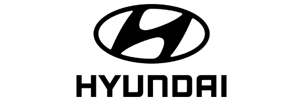
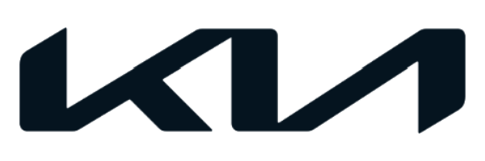
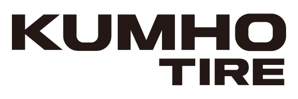
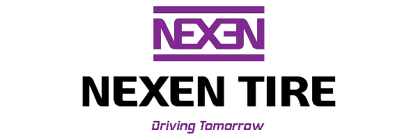
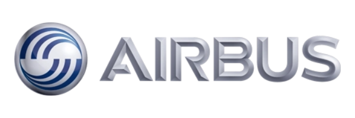
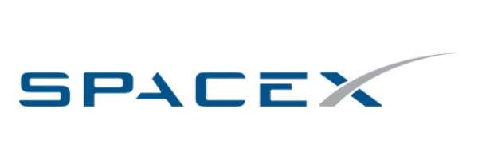
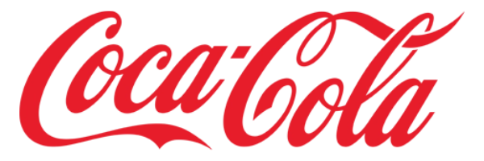
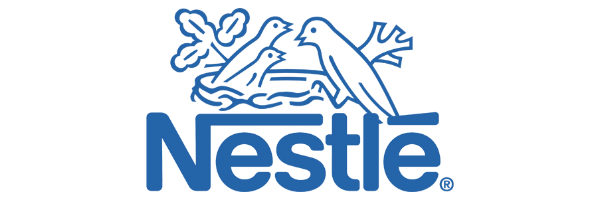
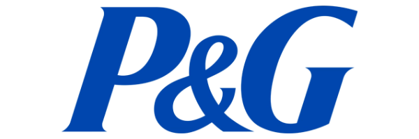
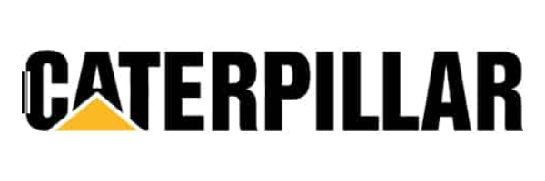
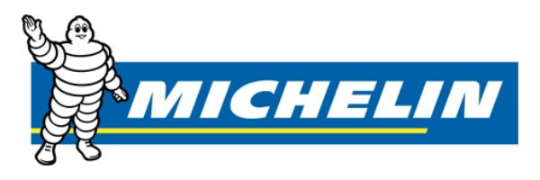
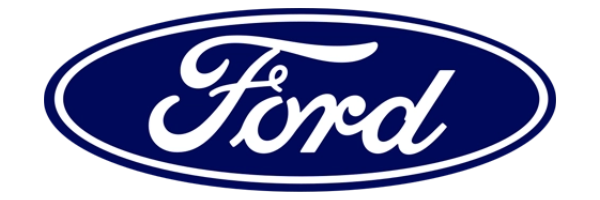
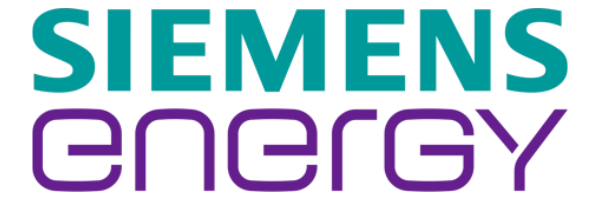
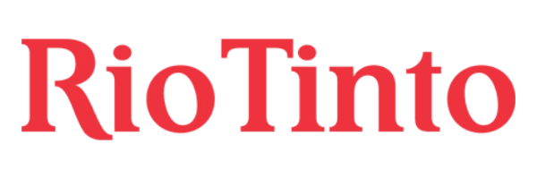
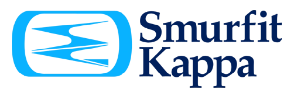
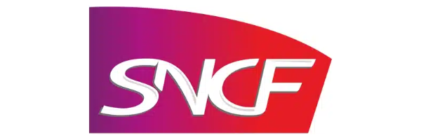
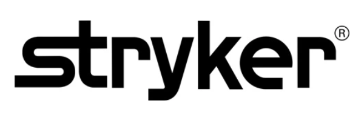
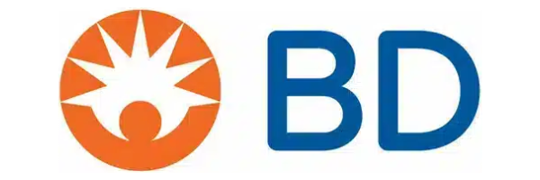
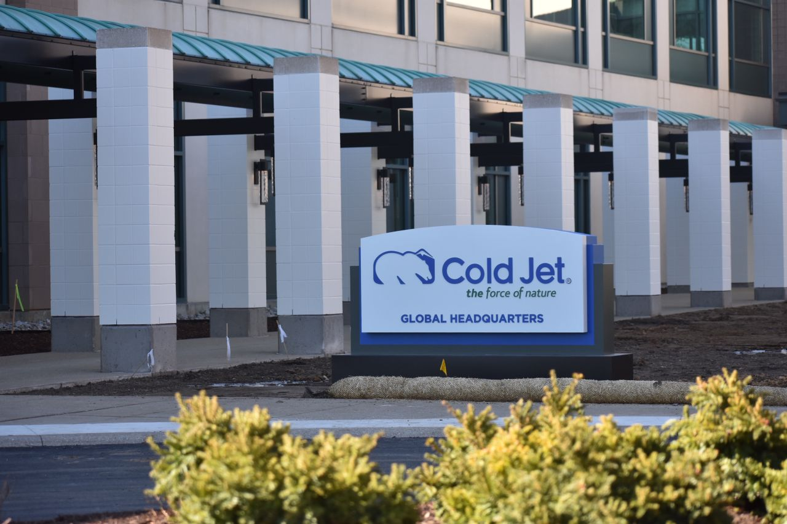

Cold Jet은 현대식 드라이아이스 블라스팅 장비의 원천 특허를 보유한 기술 기업으로, 블라스터와 드라이아이스 생산설비, 노즐, 자동화 솔루션을 개발하고 공급합니다.
1988년 설립된 바테크는 Cold Jet의 대한민국 공식 총판으로, 제품 공급뿐 아니라 세척 테스트, 렌탈과 데모, 장비 선정, 설치, 기술지원과 A/S까지 국내 고객의 도입과 운용을 지원합니다.
바테크는 Cold Jet의 교육과 세미나, 글로벌 컨퍼런스에 꾸준히 참여해 최신 기술과 적용 사례를 국내 고객 지원에 반영하고 있습니다.
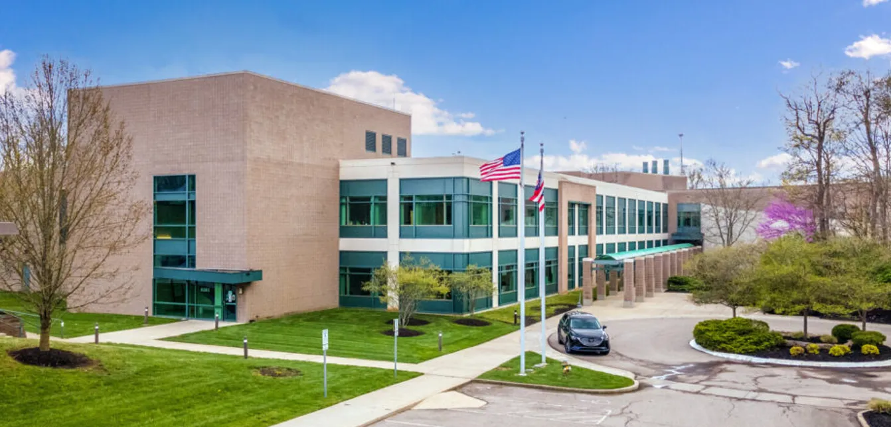
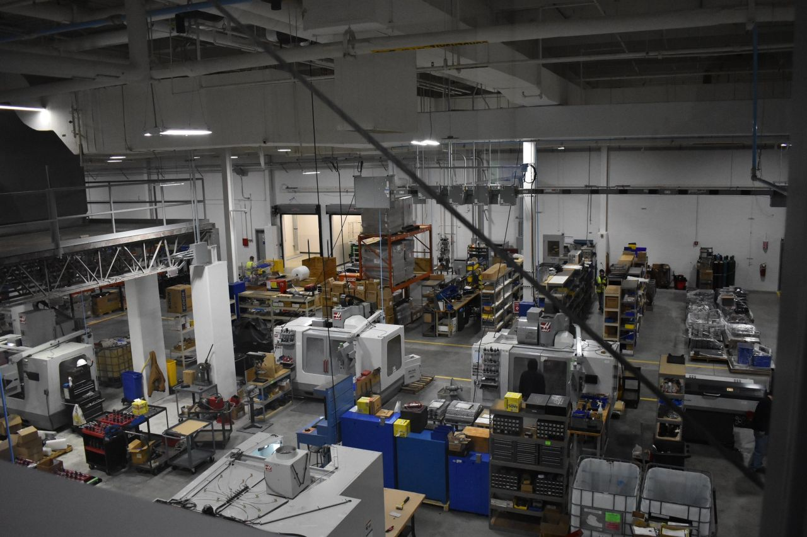
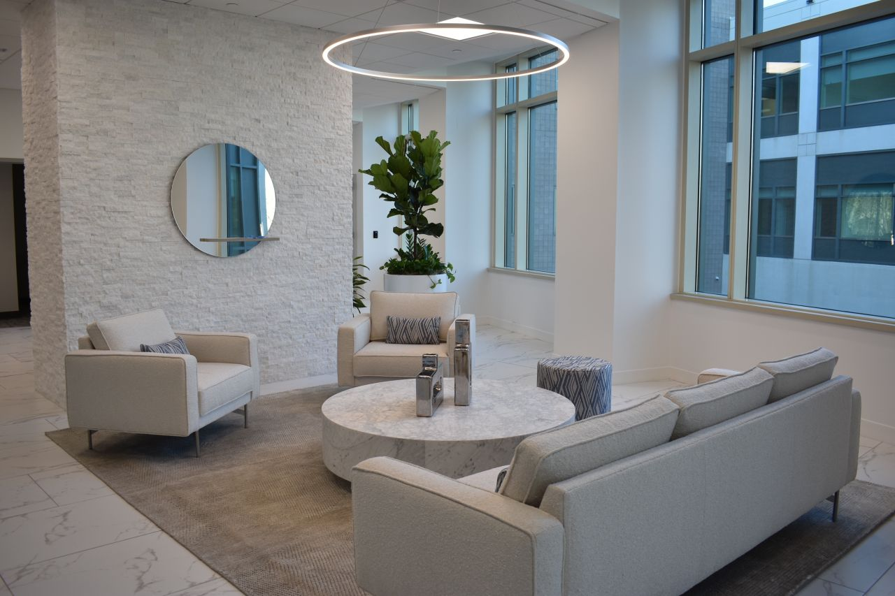
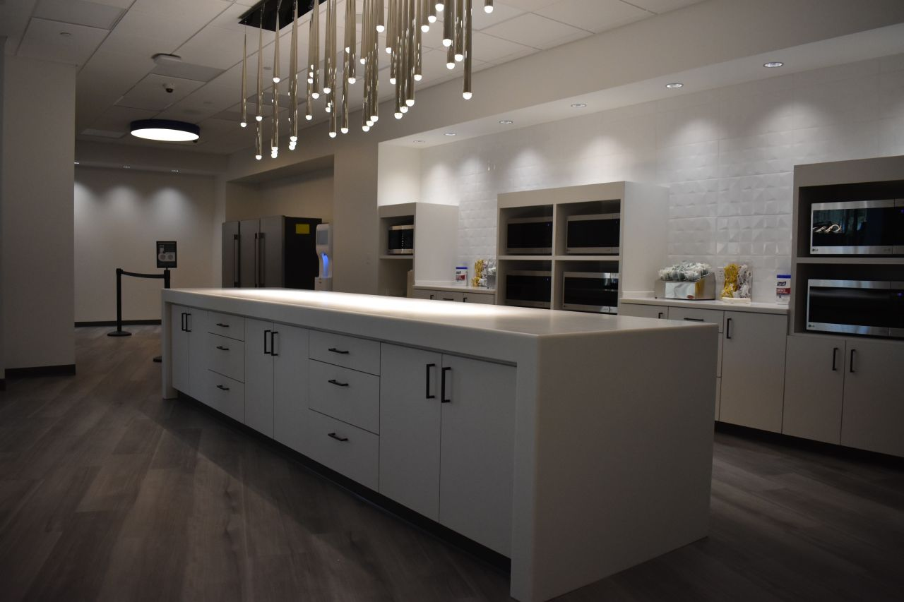
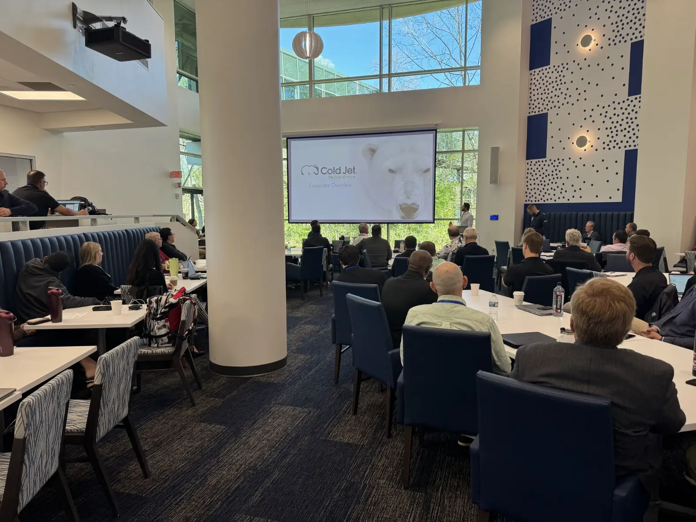


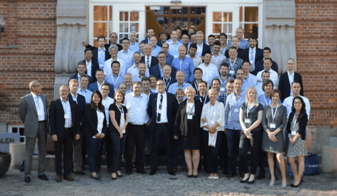
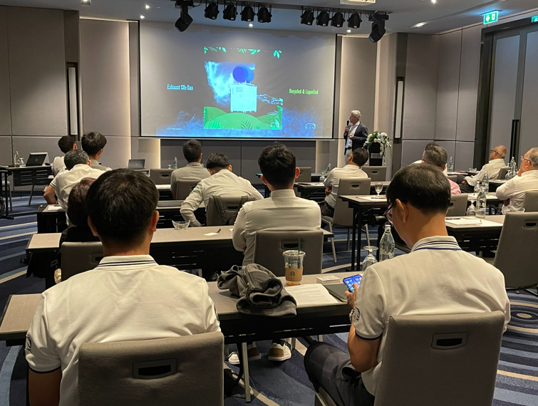
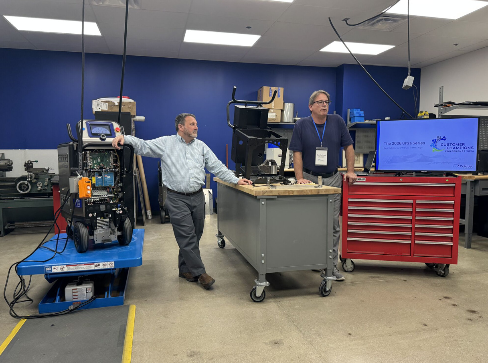
“Cold Jet의 기술과
바테크의 국내 현장 경험을 함께 제공합니다.”
구매 절차와 결제 조건에 대해 가장 많이 묻는 질문을 정리했습니다.
세척 대상과 작업 환경에 따라 세 가지 방법으로 테스트할 수 있습니다.
테스트 후에는 세척 전후 사진과 작업 조건(드라이아이스 입자 크기, 분사 압력, 사용 노즐)을 정리해 드립니다. 고객사 현장에서 장비를 직접 사용해 보고 싶으시면 렌탈로 테스트하실 수도 있습니다.
세척하려는 대상의 사진과 재질, 제거하고 싶은 오염물의 종류를 알려주세요. 현재 어떤 방식으로 세척하고 있는지와 작업 중 어려운 점도 함께 알려주시면, 적합한 테스트 방법과 장비를 안내해 드립니다.
장비 모델, 재고 상황, 선택하신 구성과 옵션에 따라 다릅니다. 견적을 드릴 때 발주 후 예상 납기를 함께 안내해 드립니다.
10개월 동안 매월 렌탈료를 내고 장비를 사용한 뒤, 기간이 끝나면 계약에서 정한 조건에 따라 장비를 인수하는 방식입니다.
드라이아이스를 정기적으로 사용하고 연간 공급 계약을 맺은 고객사는 월 단위로 결제할 수 있습니다. 보통 선결제로 시작하며, 사용량이 일정해지면 연간 계약과 월 결제로 전환하는 방안을 협의합니다.
아직 장비를 정하지 못했다면 세정 대상과 작업 조건부터 함께 살펴보고, 필요한 경우 테스트를 통해 적용 가능성을 확인할 수 있습니다. 이미 모델이나 구성이 정해져 있다면 견적과 납기, 결제 조건 등 실제 도입에 필요한 절차부터 바로 진행할 수 있습니다.
현재 검토 중인 내용과 현장 조건을 알려주시면 그 단계에 맞춰 필요한 자료와 다음 절차를 안내해 드립니다.
바테크는 Cold Jet 대한민국 공식 대리점으로 장비 선정과 테스트, 납품과 설치, 교육, A/S까지 국내에서 지원합니다.